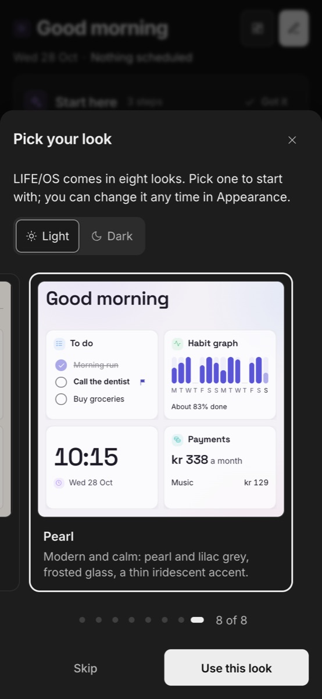
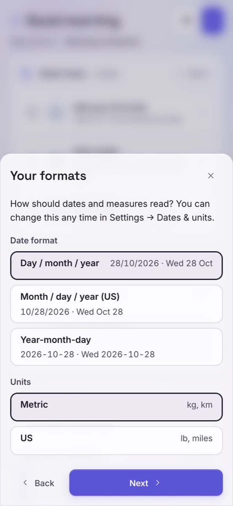
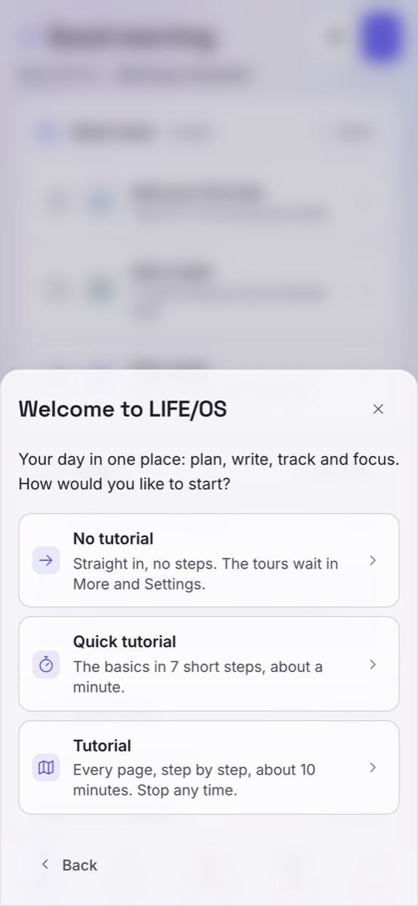
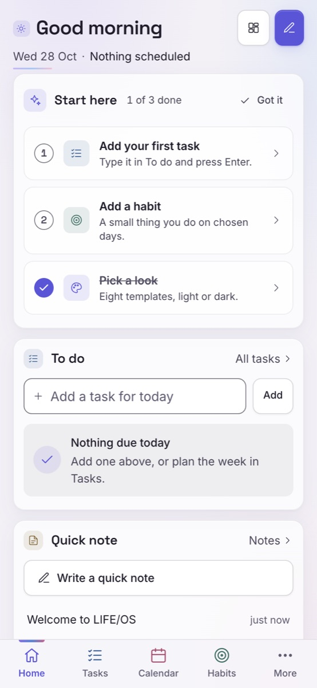
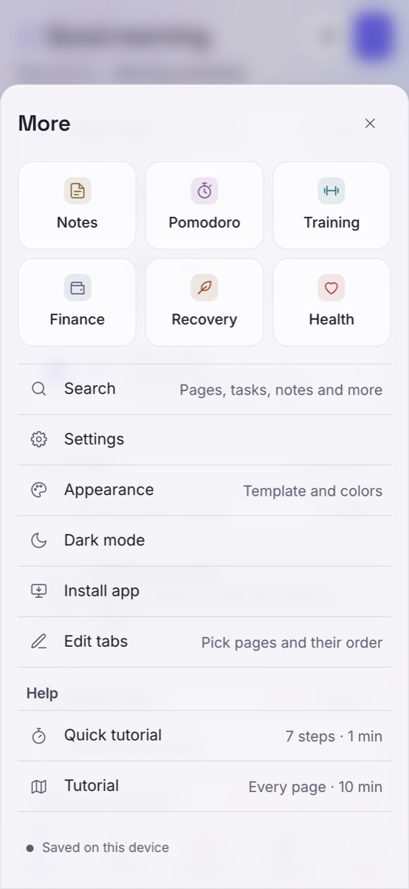

Install LIFE/OS
It takes one minute. LIFE/OS then opens like a normal app, works without internet, and updates by itself.
emanuel22003.github.io/life-os-app
Open LIFE/OS
iPhone or iPad
Use Safari (on iOS 16.4 or newer you can also use Chrome: the same Share button is in the address bar).
-
Open the link in Safari
Tap the link above, or type emanuel22003.github.io/life-os-app.
-
Tap the Share button
The square with an arrow pointing up, at the bottom of the screen (at the top on iPad).
-
Choose “Add to Home Screen”
Scroll down the list a little if you don't see it.
-
Tap “Add”
Top right. Keep the name LIFE/OS.
-
Open LIFE/OS from your Home Screen
Always open it from the new icon, not from Safari: that's the app version, with notifications and its own window.
Reminders on iPhone: they only work in the Home Screen app. Open LIFE/OS from the icon, go to Settings → Reminders and tap “Allow notifications”.
Android
Use Chrome.
-
Open the link in Chrome
Chrome may show an “Install LIFE/OS” bar at the bottom right away. If it does, tap Install and you're done.
-
Otherwise tap the ⋮ menu
The three dots at the top right.
-
Tap “Install app” (or “Add to Home screen”)
Then tap Install.
-
Open LIFE/OS from your apps
It's on your Home screen and in your app list.
Computer (Mac or Windows)
Use Chrome or Edge (on a Mac, Safari works too).
-
Open the link
In Chrome or Edge.
-
Click the install icon in the address bar
A small screen with an arrow, at the right end of the address bar. In LIFE/OS you can also click Install app at the bottom of the menu.
-
Click “Install”
LIFE/OS opens in its own window. You'll find it in your Dock / Start menu / Launchpad.
Safari on a Mac: File → Add to Dock → Add.
The first time you open it
Three quick choices, then you're in.
-
Pick your look
Swipe left and right through 8 looks. Each card is a live preview. Switch Light / Dark at the top, then tap Use this look.

-
Choose your formats
How dates look (day/month/year is the default) and Metric or US units. Tap Next.

-
Tutorial or not
No tutorial, a Quick tutorial (about a minute) or the full Tutorial. You can start them later from More.

-
You're in
Home shows your day. The bar at the bottom has your main pages; More has everything else, Settings and the tutorials.

Home 
More
Good to know
- Your data stays on your device. Nothing you type is sent to anyone. No account, no tracking.
- Updates come by themselves. When there's a new version you'll see “LIFE/OS … is ready · Reload”.
- Make a backup now and then: Settings → Download a backup. If you delete the app or clear your browser, the data on that device is gone.
- Pick your tabs: More → Edit tabs.
- This is a test version. Tell me what breaks or what you'd love to see.